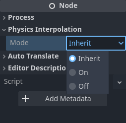

Nội suy vật lý nâng cao
Mặc dù các hướng dẫn trước sẽ cho kết quả thỏa đáng trong nhiều trò chơi, trong một số trường hợp bạn sẽ muốn tiến thêm một bước để đạt kết quả tốt nhất và trải nghiệm mượt mà nhất có thể.
Ngoại lệ đối với nội suy vật lý tự động
Ngay cả khi nội suy vật lý đang bật, vẫn có thể có một số tình huống cục bộ mà bạn sẽ có lợi khi tắt nội suy tự động cho một Node (hoặc một nhánh của SceneTree), và tự kiểm soát chi tiết hơn bằng cách thực hiện nội suy thủ công.
Điều này có thể thực hiện bằng thuộc tính Node.physics_interpolation_mode có trong mọi Node. Ví dụ, nếu bạn tắt nội suy cho một Node, các node con cũng sẽ bị ảnh hưởng theo cách đệ quy (vì mặc định chúng kế thừa thiết lập của node cha). Điều này có nghĩa bạn có thể dễ dàng tắt nội suy cho cả một scene con.

Điều đáng lưu ý là, cả trong 2D lẫn 3D, nội suy vật lý được thực hiện trên local transform của mỗi instance. Trong quá trình kết xuất, các local transform đã nội suy được truyền xuống cho các node con.
Điều này có nghĩa là nếu node cha có physics_interpolation_mode đặt là On nhưng node con đặt là Off, node con vẫn sẽ được nội suy nếu node cha đang di chuyển. Chỉ local transform của node con là không được nội suy. Vì vậy, việc kiểm soát hành vi bật / tắt của các node đòi hỏi một chút suy nghĩ và lên kế hoạch.
Tình huống phổ biến nhất mà bạn có thể muốn tự thực hiện nội suy là với Camera.
Camera
Trong nhiều trường hợp, Camera3D có thể dùng nội suy tự động giống như bất kỳ node nào khác. Tuy nhiên, để có kết quả tốt nhất, đặc biệt ở tốc độ tick vật lý thấp, bạn nên áp dụng cách nội suy camera thủ công.
Lý do là người xem rất nhạy cảm với chuyển động của camera. Ví dụ, một Camera3D tự căn chỉnh lại một chút mỗi 1/10 giây (ở tốc độ tick 10tps) thường sẽ dễ bị nhận ra. Bạn có thể có kết quả mượt mà hơn nhiều bằng cách di chuyển camera mỗi frame trong _process và tự theo dõi một mục tiêu đã được nội suy.
Nội suy camera thủ công
Đảm bảo camera dùng không gian tọa độ toàn cục
Bước đầu tiên khi thực hiện nội suy camera thủ công là đảm bảo transform của Camera3D được chỉ định trong không gian toàn cục thay vì kế thừa transform của một node cha đang di chuyển. Lý do là có thể xảy ra phản hồi qua lại giữa chuyển động của node cha của Camera3D và chuyển động của chính Node camera, làm hỏng việc nội suy.
Có hai cách để làm điều này:
Di chuyển Camera3D để nó độc lập trên nhánh riêng, thay vì là node con của một đối tượng đang di chuyển.

Gọi Node3D.top_level và đặt nó thành
true, việc này sẽ khiến Camera bỏ qua transform của node cha.
Ví dụ điển hình
Một ví dụ điển hình của cách làm tùy chỉnh là dùng hàm look_at trong Camera3D mỗi frame trong _process() để nhìn vào một node mục tiêu (chẳng hạn người chơi).
Nhưng có một vấn đề. Nếu dùng get_global_transform() truyền thống trên node "mục tiêu" của Camera3D, transform này sẽ chỉ hướng Camera3D vào mục tiêu tại tick vật lý hiện tại. Đây không phải là điều chúng ta muốn, vì camera sẽ giật mỗi tick vật lý khi mục tiêu di chuyển. Mặc dù camera có thể được cập nhật mỗi frame, điều này không giúp tạo chuyển động mượt nếu mục tiêu chỉ thay đổi mỗi tick vật lý.
get_global_transform_interpolated()
Điều chúng ta thực sự muốn camera hướng vào không phải là vị trí của mục tiêu ở tick vật lý, mà là vị trí đã nội suy, tức vị trí mà mục tiêu sẽ được kết xuất.
Chúng ta có thể làm điều này bằng hàm Node3D.get_global_transform_interpolated. Hàm này hoạt động y hệt như việc lấy Node3D.global_transform nhưng trả về transform đã nội suy (trong một lần gọi _process()).
Quan trọng
Chỉ nên dùng get_global_transform_interpolated() một hoặc hai lần cho các trường hợp đặc biệt như camera. Không nên dùng nó tràn lan khắp code của bạn (cả vì lý do hiệu năng lẫn để lối chơi hoạt động đúng).
Ghi chú
Ngoài các ngoại lệ như camera, trong hầu hết trường hợp, logic trò chơi của bạn nên nằm trong _physics_process(). Trong logic trò chơi, bạn nên gọi get_global_transform() hoặc get_transform(), chúng sẽ trả về transform vật lý hiện tại (lần lượt trong không gian toàn cục hoặc cục bộ), thường là thứ bạn cần cho code lối chơi.
Ví dụ script camera thủ công
Đây là ví dụ về một camera cố định đơn giản đi theo một mục tiêu đã nội suy:
extends Camera3D
# Node that the camera will follow
var _target
# We will smoothly lerp to follow the target
# rather than follow exactly
var _target_pos : Vector3 = Vector3()
func _ready() -> void:
# Find the target node
_target = get_node("../Player")
# Turn off automatic physics interpolation for the Camera3D,
# we will be doing this manually
set_physics_interpolation_mode(Node.PHYSICS_INTERPOLATION_MODE_OFF)
func _process(delta: float) -> void:
# Find the current interpolated transform of the target
var tr : Transform = _target.get_global_transform_interpolated()
# Provide some delayed smoothed lerping towards the target position
_target_pos = lerp(_target_pos, tr.origin, min(delta, 1.0))
# Fixed camera position, but it will follow the target
look_at(_target_pos, Vector3(0, 1, 0))
Nhìn bằng chuột
Nhìn bằng chuột (mouse look) là cách điều khiển camera rất phổ biến. Nhưng có một vấn đề. Không giống như input bàn phím có thể được lấy mẫu định kỳ theo tick vật lý, các sự kiện di chuyển chuột có thể đến liên tục. Camera sẽ được kỳ vọng phản ứng và đi theo các chuyển động chuột này ở frame tiếp theo, thay vì đợi đến tick vật lý tiếp theo.
Trong tình huống này, tốt hơn có thể là tắt nội suy vật lý cho node camera (dùng Node.physics_interpolation_mode) và áp dụng trực tiếp input chuột vào góc xoay của camera, thay vì áp dụng nó trong _physics_process.
Đôi khi, đặc biệt với camera, bạn sẽ muốn kết hợp cả nội suy và không nội suy:
Camera góc nhìn thứ nhất có thể đặt camera tại vị trí người chơi (có thể dùng Node3D.get_global_transform_interpolated), nhưng điều khiển góc xoay Camera từ chuột không nội suy.
Tương tự, camera góc nhìn thứ ba có thể xác định điểm nhìn (vị trí mục tiêu) của camera bằng Node3D.get_global_transform_interpolated, nhưng đặt vị trí camera bằng chuột không nội suy.
Có rất nhiều hoán vị và biến thể của các loại camera, nhưng rõ ràng là trong nhiều trường hợp, tắt nội suy vật lý tự động và tự xử lý có thể cho kết quả tốt hơn.
Tắt nội suy trên các node khác
Mặc dù camera là ví dụ phổ biến nhất, vẫn có một số trường hợp bạn có thể muốn các node khác tự kiểm soát việc nội suy của chúng, hoặc không được nội suy. Ví dụ, hãy xét một người chơi trong trò chơi góc nhìn từ trên xuống có góc xoay được điều khiển bằng chuột. Tắt xoay vật lý cho phép góc xoay của người chơi khớp với chuột theo thời gian thực.
MultiMesh
Mặc dù hầu hết các Node hiển thị tuân theo mô hình mỗi Node một visual instance, MultiMesh có thể điều khiển nhiều instance từ cùng một Node. Do đó, chúng có thêm một số hàm để điều khiển chức năng nội suy trên cơ sở từng instance. Bạn nên tìm hiểu các hàm này nếu đang dùng MultiMesh có nội suy.
Chi tiết đầy đủ có trong tài liệu MultiMesh.